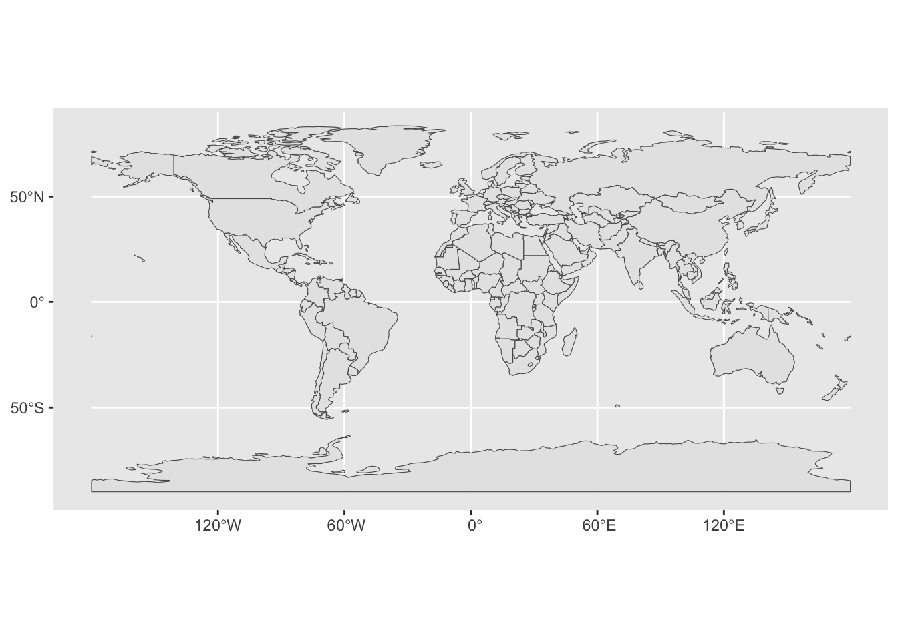
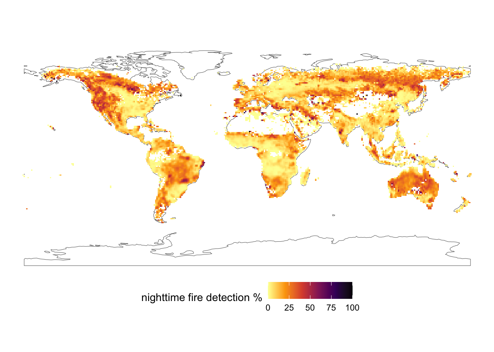

library(sf)
library(dplyr)
library(ggplot2)Warning: package 'ggplot2' was built under R version 4.5.2library(rnaturalearth)
library(rnaturalearthdata)There are a lot of wonderful packages out there with geospatial data just ready for you to play with! Today, we’re going to have you work with some on its own, combine it with some external data, and then go out and fetch your own geospatial data to plot. By the end, I’m hoping you will feel like an accomplished mapmaker with a good mastery of the basics to make lovely figures and maps for future papers or web apps.
One of my favorite packages out there is rnaturalearth. It’s a great package that accesses a subset of the naturalearthdata dataset (which you can also just download parts of and load up). It makes plotting things VERY easy for me when I’m working on projects. I’d like to have you work with it a bit for this question. Load up the following libraries (and if you are missing some, install them!):
library(sf)
library(dplyr)
library(ggplot2)Warning: package 'ggplot2' was built under R version 4.5.2library(rnaturalearth)
library(rnaturalearthdata)To learn more, please read this
ne_countries(). Plot it so we know you’ve got it. Feel free to theme or play with color here.
df_layers_cultural - it’s a data frame showing what cultural layers are available. Choose one that is global in scope, and use ne_download() where type = the layer you chose. Don’t forget to also set the scale. I’d recommend choosing a layer with a scale of 110. Note - you will need to supply an argument to both the category and scale. Then, plot it on top of the world. Also, some layers are not available. If you can, make it fancy!scale = 10, and create a leaflet map so that we can explore where the world’s airports are. You can use any of the marker functions, such as addCircleMarkers() or addMarkers(). Use addProviderTiles() to give it an interesting background tileset. See here for those tilesets.Bonus +1: have a popup where if you click it you get the airport name.
Bonus +1: Give it a look other than the default for the marker.
Let’s try some joining and see what we can learn. Grab the CDC heart disease data from a few years back and let’s load it up.
na="Insufficient Data". Take a look at what is in it - anything there that might provide a unique identifier?# A tibble: 3,144 × 4
State County Death_Rate FIPS_Code
<chr> <chr> <dbl> <dbl>
1 Alabama Autauga 463 1001
2 Alabama Baldwin 391. 1003
3 Alabama Barbour 533. 1005
4 Alabama Bibb 511. 1007
5 Alabama Blount 426. 1009
6 Alabama Bullock 483. 1011
7 Alabama Butler 490. 1013
8 Alabama Calhoun 549 1015
9 Alabama Chambers 469. 1017
10 Alabama Cherokee 429. 1019
# ℹ 3,134 more rowsUSAboundaries package. It’s a cool package that has boundaries of the US from the revolution to now.devtools::install_github("ropensci/USAboundaries")
devtools::install_github("ropensci/USAboundariesData")Note - comment these out once you do it.
Now, create an object of counties and take a look and what columns are there.
library(USAboundaries)Warning: package 'USAboundaries' was built under R version 4.5.2map_sf <- us_counties()Here, we don’t have a FIPS code as above But…. it’s a character
FIPS_code variable to join on! Paste together statefp and countyfp and turn it into a number. Make sure you don’t accidetally paste a space in between the two fp codes!map_sf <- map_sf |>
mutate(FIPS_Code = paste0(statefp, countyfp) |> as.numeric())anti_join() to see two things: 1) if we join without modification, what columns are automagically used for the join. 2) How many and what rows are in the heart disease data set, but not in the counties data set?st_as_sf(). Oh, and make sure you filter our Hawaii and Alaskajoined_map <- left_join(heart_disease, map_sf) |>
st_as_sf() |>
filter(!(State %in% c("Hawaii", "Alaska")))Joining with `by = join_by(FIPS_Code)`A paper recently published a map of % nighttime fire detections. Load it up as follows:
library(terra)terra 1.8.42library(tidyterra)
Attaching package: 'tidyterra'The following object is masked from 'package:stats':
filternightfire <- read.csv("https://static-content.springer.com/esm/art%3A10.1038%2Fs41586-021-04325-1/MediaObjects/41586_2021_4325_MOESM2_ESM.csv")
fire_spatraster <- rast(nightfire, crs = "epsg:4326")Combine this work your world map above to make a ggplot of fire across the world. Bonus points for exploring st_union() or otherwise to remove inner borders in the world sf object
Spherical geometry (s2) switched offalthough coordinates are longitude/latitude, st_union assumes that they are
planar
OK, we’re going to combine two different rasters - one of Cargo Vessel density in the Western Atlantic in 2011 and one of average ocean bottom temperatures. AND we’re going to combine them with a map of the Coastline….. but I want this to JUST be of the Gulf of Maine area.
Here’s our starting bounding box.
aoi <- c(xmin = -71.674805,
xmax = -63.083496,
ymin = 41.277806,
ymax = 45.935871) |>
st_bbox() |>
st_as_sfc() |>
st_set_crs(4326) Write it out in comments given that you have an aoi, a shapefile of the coast (from class OR from using ne_coastline()), and two different rasters at different scales, and pretty much everything that a different projection. What is the most efficient way forward from raw files to map?
Download and unzip the following files:
- AIS data
- Oceanography data
Well those are rather large! They are also in an interesting format called a gdb - an ESRI Geodatabase. Fortunately, terra can load from that!
NOTE: USE THIS TO COMPILE YOUR HOMEWORK, BUT DO NOT SUBMIT A ZIPPED UP HOMEWORK WITH THE RASTER DATA OR ZIP FILES - IT WILL KILL CANVAS
#fvcom_temperature_bottom_climatology_1978to2013_annual, fvcom_temperature_surface_climatology_1978to2013_annual, fvcom_stratification_climatology_1978to2013_annual, fvcom_currents_bottom_climatology_1928to2013_annual, fvcom_currents_surface_climatology_1978to2013_annual
envt_raster <- rast("Data/Oceanography/FVCOMAnnualClimatology.gdb",
subds = "fvcom_temperature_bottom_climatology_1978to2013_annual")
# PassengerVesselDensity2011, TankerVesselDensity2011, TugTowVesselDensity2011, CargoVesselDensity2011, AllVesselDensity2011
ais_raster <- rast("Data/AIS2011/AIS2011.gdb/",
subds = "CargoVesselDensity2011")Notice how I list what layers are possible above each.
plot() for one followed by plot(second_raster, add = TRUE)?plot() and plot(add = TRUE) to check and make sure that things are in the same projection and cropped right.Note - you’ll need two things to help you. First, think about the order of layers of geospatial data. Second, with your fills for your rasters, you will need na.value = "transparent". Third - how do you do two fills with different layers? Well, you’ll need a new package! ggnewscale allows you to put a layer into a plot, set properties of it in terms of color of fill, and then reset things to a new fill scale. See the website linked above - but you will need ggnewscale::new_scale_fill() in your ggplot2 stack. So install.packages("ggnewscale") before you make your plot!